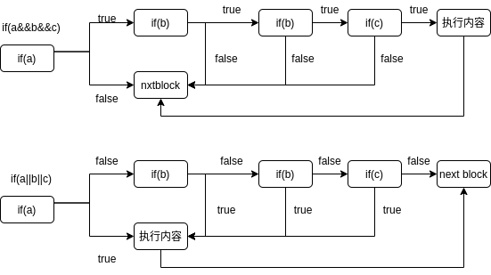

短路求值实验指导
短路求值（Short-circuit evaluation，又称最小化求值），是一种逻辑运算符的求值策略。只有当第一个运算数的值无法确定逻辑运算的结果时，才对第二个运算数进行求值。例如，当 AND 的第一个运算数的值为
false时，其结果必定为false；当 OR 的第一个运算数为true时，最后结果必定为true，在这种情况下，就不需要知道第二个运算数的具体值。
现代的编译器在处理具有短路求值的条件表达式时，一般是通过控制流来实现短路求值的。
控制流法
也被称做“跳转法”，顾名思义，就是通过条件跳转来实现短路求值的语义。
比如说，下面这个例子
if (a && b && c) {
do_something();
}
do_others();
每一个方框都代表着一个基本块，true 和 false 由 br 指令体现：

比如 if(a && b && c) 的代码，交给编译器，它生成的代码的逻辑实际上是类似这样的：
;
; 其他代码，%a, %b, %c 在此被定义
;
block_entry:
br label %block_a
block_a:
%res_a = icmp ne i32 %a, 0
br i1 %res_a label block_b, label %block_out
block_b:
%res_b = icmp ne i32 %b, 0
br i1 %res_b label block_c, label %block_out
block_c:
%res_c = icmp ne i32 %c, 0
br i1 %res_a label block_exec, label %block_out
block_exec:
do_sth()
; a, b, c 都为真，执行语句内内容
block_out:
; a, b, c 不都为真，跳到这个块
do_others()
从上面可以看到，我们通过多个基本块和跳转指令实现了短路求值。这体现在，如果 a, b, c 中任何一个非真，都会直接跳到 block_out，而如果 a / b 为真，则会跳转到 block_b/c 中判断 b/c, 而在最后的 block_c 中，如果 c 也为真，则程序会跳转到 block_exec 中执行对应语句。
参考文献
本节参考了